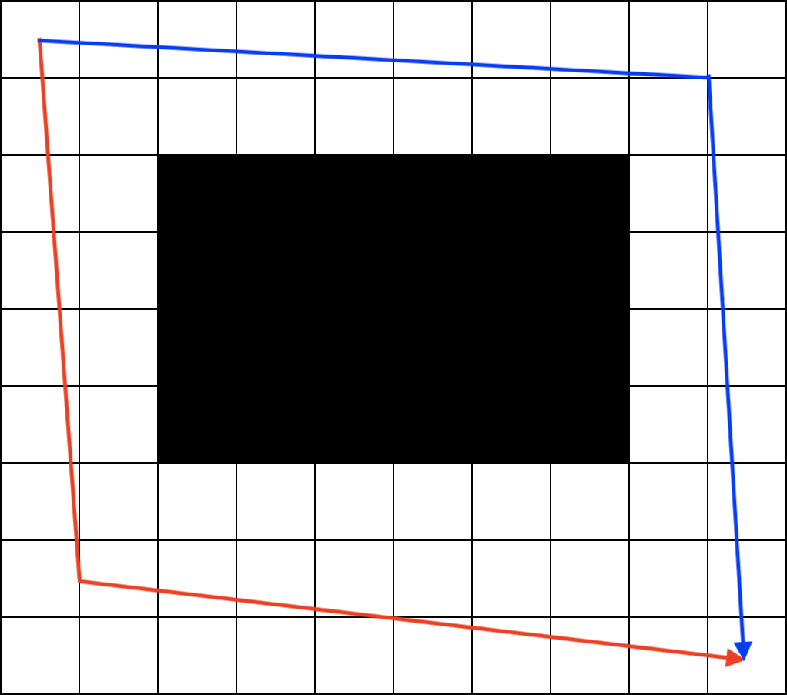
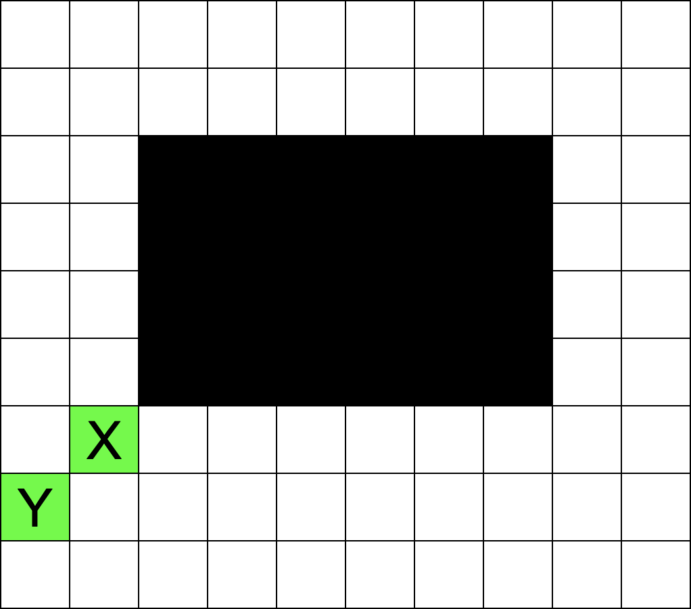

We can solve this test set using dynamic programming. Let f(x, y) be the probability Jemma passes the challenge if she is currently in the square (x, y). The base case of this function is f(W, H) = 1. Also, if the square (x, y) has been removed, then f(x, y) = 0.
If there is only one possible square to go to from square (x, y) (i.e. either x = W or y = H), then f(x, y) = f(x', y'), where (x', y') is the possible next square. Otherwise, let (x1', y1') and (x2', y2') be the possible next squares. Since they have the same probability to become the next square, f(x, y) = 0.5 × f(x1', y1') + 0.5 × f(x2', y2').
The running time and space of this solution is O(W × H).
The first observation to solve this problem is to realize that there are two ways to avoid the hole: either going to the left and the bottom of the hole (illustrated by the red path in the figure below), or going to the top and the right of the hole (illustrated by the blue path in the figure below).
It can be seen that the set of paths in the red path and the blue path are disjoint--there is no path that goes both to the left of the hole and to the top of the hole simultaneously. Therefore, we can compute the probability that Jemma passes the challenge by taking the red path and the blue path separately and compute the sum of both probabilities.
Since the probability of passing the challenge by taking the blue path can be computed similarly, we only focus on computing the probability of passing the challenge by taking the red path for the rest of the discussion. The next observation to solve this problem is that we can choose a set of squares diagonally from the bottom-left corner of the hole (illustrated by the green squares below) such that Jemma has to pass exactly one of the squares to pass the challenge by taking the red path. Also, by landing on one of the squares, it is no longer possible that Jemma will fall to the hole, thus passing the challenge by taking the red path is now guaranteed.
Therefore, computing the probability of passing the challenge by taking the red path is equivalent to computing the probability that Jemma will land on one of the green squares. Similar to the red and blue paths discussion, since Jemma cannot pass two green squares simultaneously, we can compute the probability that Jemma lands on each square separately and compute the sum of all probabilities.
Let us take square X for an example. Consider all paths that go to the square X. For each move in the path, there is a 0.5 probability that the move will follow the path. Since the number of moves to square X is (L + D - 2), there is a (0.5)(L + D - 2) probability that this path will be taken. This number has to be multiplied with the number of paths to go to square X, which can be computed using a single binomial coefficient. The probability of reaching any particular green square is the same for all but the green square in the last row, which is left to the reader as an exercise.
To handle floating point issues, we can store every huge number in their log representation (i.e. storing log2(x) instead of x). We can then compute the value of C(n, k) / 2n using 2log2(n! / (k! × (n - k)!) / 2n) = 2log2(n!) - log2(k!) - log2((n - k)!) - n, which takes constant time to compute if we have precomputed every value of log2(x!). Since there can be at most O(N) green squares, where N is the larger length of the grid (i.e. N = max(H, W)), the total running time of this solution is O(N).